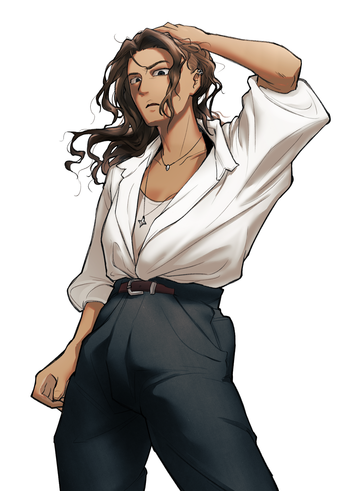

캐치 프레이즈
입은 귀찮아도 몸은 적극적!
한마디
“ 어휴, 비켜봐. ”
외관
SUPPORT @kaju_bbo
균형 잡힌 건강한 몸. 약간 짙은 피부색.
웨이브 진 어두운 갈색 머리카락은 어깨에 닿을 정도로 내려오고 눈썹 부근에서 시작해 아랫부분을 싹 밀었다. 위쪽 머리가 길게 내려오지만 물결치는 덕분에 비어있는 공간으로 밀린 부분이 확실하게 드러난다. 얼굴로 내려오는 머리카락 일부분은 쭉 내려오다 턱선 근처에서 뚝 끊긴다,
머리가 두껍고 꼬리는 얇은 눈썹은 감정에 따라 자유분방하게 움직인다. 주로 찡그리기에 사용된다. 끝이 올라간 늑대 상 눈 속의 눈동자는 눈썹과 똑같은 검은색이다. 평균적인 코 아래로는 조금 두툼하고 긴 입이 보인다.
왼쪽 귓바퀴에 은색 링 귀걸이 2개, 오른쪽 귓불에 은색 링 귀걸이 1개가 덜렁거리지 않게 자리 잡고 있다. 긴 바지 아래로는 발목이 보이고 광이 나는 로퍼를 신었다.
참고용
머리색 #2d170e
피부색 #c88a58
이름
다 은설헌
나이
32
키/체중
176 cm / 67 kg
성격
Keyword: 단순한 생각, 쿨한, 기분파
몸이 힘들면 머리가 편하다. 생각할 시간에 후딱 해치우고 넘어가고 싶어 한다. 시원한 문제해결과 깔끔한 마무리를 원한다. 사적인 곳에서까지 끙끙거리기 싫어한 탓이다. 최대한 가볍게 생각하려고 하며 이리저리 꼬지 않고 곧바로 받아들인다. 온·오프가 확실한 사람이라고 보면 된다. 생각을 지속하지 않다 보니 나머지는 몸으로 때우는 경향이 있는데, 어떻게 보면 미련할 정도다. 자신이 손해를 입으면서도 기어코 몸을 움직이니.
직관적이며 답답하지 않고 망설임 없는 깔끔한 성격. 간접적으로 빙빙 꼬아 말하지 않고 의견을 확실하게 피력한다. 내숭을 떠는 것을 그리 좋아하지 않아 의견 불일치 등의 문제가 생긴다면 직설적으로 말한 후 뒤 감정을 남겨두지 않는다. 입 밖으로 내뱉은 순간 끝. 말을 고쳐야 할 때도 바로 사과를 내민다. 제삼자의 뒷말을 꺼내는 사람들을 매우 불편해하고 싫어한다.
그는 순간의 기분에 따라 행동이 좌지우지된다. 불과 몇 분 전에도 선뜻 나서다가 불현듯 귀찮다는 생각이 든다면 바로 손을 뗀다. 일관적인 것을 좋아하는 사람과 매우 반대된다. 꾸준한 안정을 기대하면 안 되고 변화를 받아들일 수 있어야 한다. 장단점이 뚜렷하다. 조금은 불편할지도 모르는 부탁도 그때의 기분이 평온하다면 별말 없이 들어줄 가능성이 커진다. 반대로 같은 부탁이라도 낮은 텐션인 상태라면 받아주지 않거나 불확실한 날짜를 언급하며 미룬다.
기타
생일 11월 6일
직업은 신발 디자이너.
종류를 따지지 않는다. 가장 중요하게 생각하는 것은 착용했을 때의 편안함.
부모 제외하고 자신이 디자인한 신발을 타인에게 선물해본 적이 없다. 관련 미신을 믿고 있다.
좋아하는 것은 조용한 공원, 오렌지색, 시원한 물, 답장이 빠른 의뢰인, 선글라스, 말랑한 인형, 딱딱한 침대, 연락이 없는 상사, 번뜩이는 아이디어, 떨어지지 않는 접착 메모지, 녹슨 냄새.
싫어하는 것은 눈앞에서 떠나간 지하철, 불편한 신발, 대사가 안 들리는 영화/드라마, 추리 소설, 습한 장소, 슬리퍼, 창틀의 먼지, 망친 작업물, 깨, 자갈 바닥, 물티슈 냄새.
귀찮아하는 것은 가방 정리, 손톱 관리.
취미는 외국에서 만든 우주 다큐멘터리 감상하기.
잔잔하고 절대 닿지 못할 미지의 공간을 여행하는 느낌이 든다. 자막도 나오니 이해도 쉽고 멍하니 쳐다보기만 해도 차분해진다. 자신의 존재가 얼마나 작고 하찮은지를 새삼스럽게 깨닫는 시간을 가질 수 있다. 평소보다 힘들었던 날은 시청 시간이 배로 늘어난다.
퇴근 후 근처 헬스장에서 1시간 동안 운동하고 귀가를 시작한다. 작업을 실내에서 하다 보니 굳어가는 몸을 위해 억지로 꾸준한 습관을 들였다. 등록한 지 1년 4개월이 넘었다.
자신의 의지로 나갈 수 없는 공간에 혼자 있는 것을 꺼린다.
그러나 단 한 명이라도 남과 함께라면 평온함을 유지한다. 그 덕에 다른 사람들은 그가 느끼는 공포심을 잘 알아채지 못한다. 눈치가 매우 빨라야 알아차릴 정도. 혼자 남게 될 것 같은 낌새를 느낀다면 뜬금없이 달라붙기 때문에 위화감을 느낄 수도 있다. 하지만 뚜렷한 이유는 절대 밝히지 않고 다양한 핑계를 대며 따라다닐 것이다.
작업실에 출근해 평소와 다름없이 일하고 퇴근하던 길이었다. 늘 그랬듯이 시선은 바닥을 향해 있었다. 정확히는 사람들의 신발에. 유행에 민감해야 하는 직업답게 땅을 박차는 신발들을 구경하는 것이 그의 버릇이다. 그러나 그것들을 보며 깊은 생각을 하지는 않는다. 출근 시간에는 직업 관련한 생각을 많이 하지만 퇴근 시간에는 퇴근에만 집중해야 한다. 너무 많은 생각은 그를 피곤하게 만든다. 습관 때문에 자연스레 바닥을 향하는 고개를 억지로 들어 뻐근한 목을 몇 번 주무르던 와중… 울리는 휴대전화.
소지품
상체 절반 크기의 숄더백 속,
진행률이 92%쯤 되는 조잡한 미완성 신발 한 켤레.
마구 구겨진 영수증.
관계
-